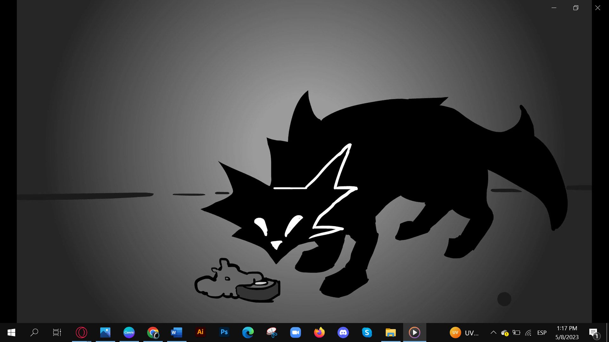
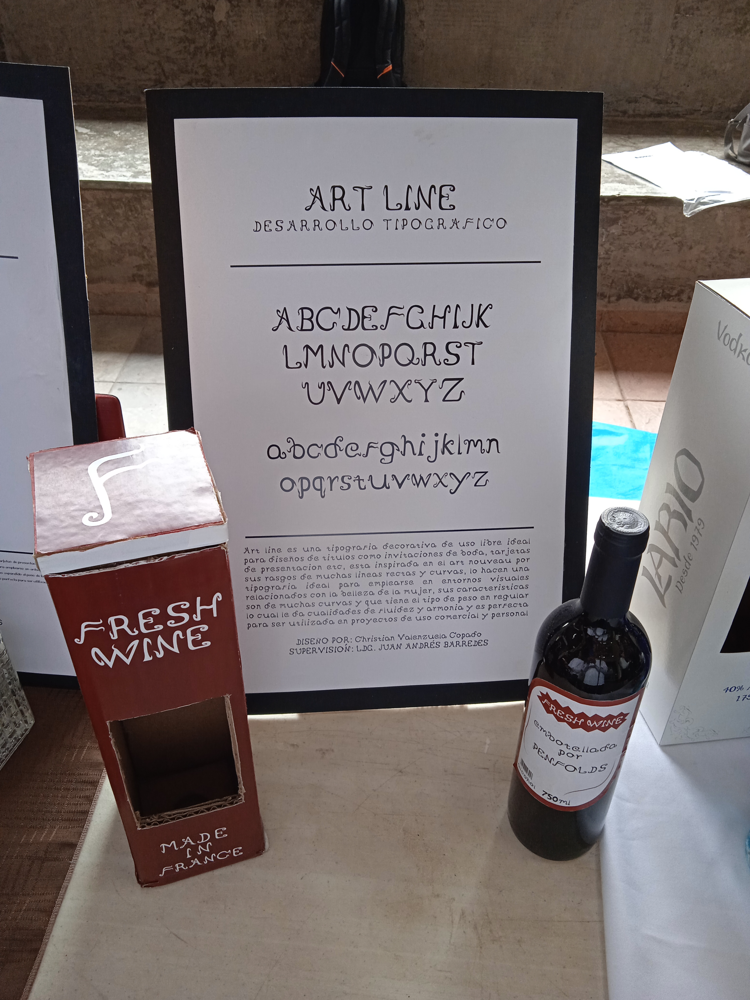
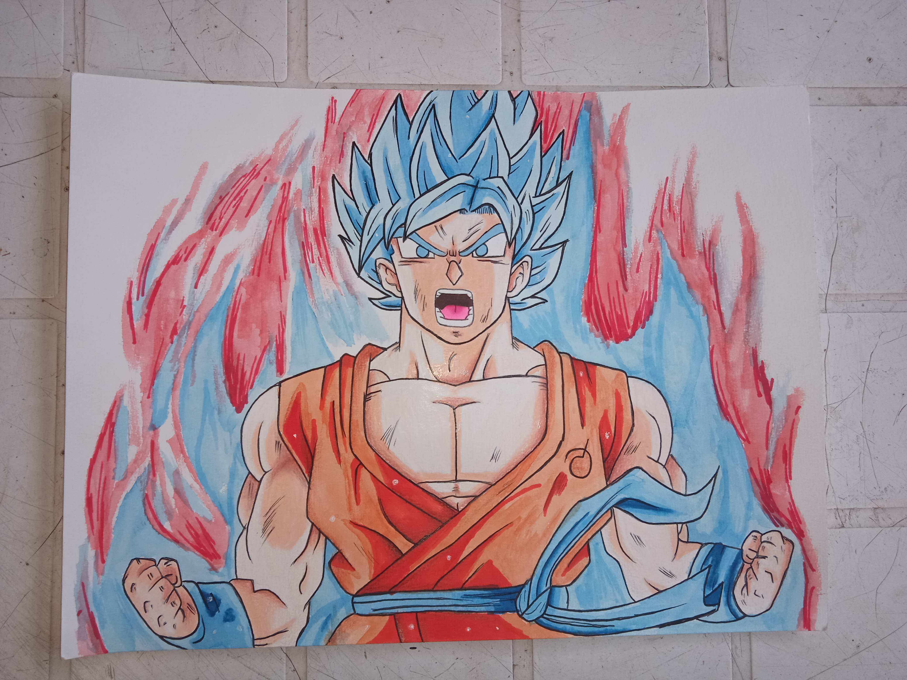

Para el proyecto final, se decidió hacer una ilustración de unos audífonos gamers con el fin de poner en práctica todo lo aprendido en el semestre como el manejo del color, desde cómo combinar hasta como poder hacer los degradados
En este proyecto, se puso en práctica todas las técnicas del programa de ilustrador para poder hacer este proyecto, desde cómo realizar el trazo correcto, ordenar en capas el trazo y el colorearo.
NARRATIVA - PROYECTO AUDIOVISUAL

Para el proyecto final de narrativa, se realizó un trabajo audiovisual, para esto se escogió una marca y un cuento infantil, en este caso se eligió a capcom como marca y la caperucita roja como cuento, a raíz de eso, se hizo una animación que se tuvieran que juntar ambas partes, y como la marca que se eligió es una empresa que se dedica a crear videojuegos, se escogió Resident Evil 4 con el propósito de promocionar su Remake, puesto que el juego se creó en el 2005 y lo remasterizaron en 2023.
Después se empezó a seleccionar los personajes de Resident Evil y adaptarlos de alguna forma al cuento y estos fueron: Caperucita roja (Ashley), Cazador (León) y Lobo (Perro zombie). La animación tiene una duración de 50 segundos donde Caperucita roja (Ashley), camina por el bosque y se encuentra una casa solitaria, donde al interior se encuentra el Lobo (Perro zombie) y el Cazador (León) llega a salvarla, tanto como en el juego como en el cuento, para que al final Leon suelte su mítica frase “story of my life”. Ya hecha la animación, se subió a la plataforma de YouTube.
PROCESOS DE IMPRESIÓN - REVISTA DEPORTIVA
En este proyecto, se realizó una revista con temática deportiva, aplicando los conocimientos vistos en el semestre, como los márgenes, el sangrado etc. Para después imprimirse en tamaño carta en papel couche delgado.
DISEÑO TIPOGRÁFICO - BOTELLA DE VINO

Para esto se dividió en 2 partes, primeramente se eligió un estilo vanguardia Art nouveau que se caracteriza por la presencia de elementos de la naturaleza, enfatizando sus líneas rebeldes como una analogía a la libertad frente a la industrialización, y después hacer una tipografía con el estilo ya seleccionado, en la 2da parte se tenía que escoger un producto que vaya de acuerdo con la tipografía, en este caso fue un vino ya que es elegante y queda perfecto con el estilo de la tipografía, aparte de la botella también se hizo el empaque de la misma donde viene para poder venderse.
EDICIÓN DIGITAL DE IMÁGENES - POSTER DEL REAL MADRID
Para el proyecto de esta materia, se tenían que poner en práctica las herramientas visto en el semestre del programa Photoshop, y en este caso se hizo un póster del equipo de fútbol Real Madrid “el rey de europa”, donde se aplicaron diferentes tipos de herramientas como recorte de imágenes, opciones de fusión, curvas aparte de usar un filtro de camera raw al finalizar todo el diseño del poster para poder pulirlo más.
TÉCNICAS DE REPRESENTACIÓN - TÉCNICA MIXTA

Para este proyecto se usó un técnica mixta que es combinar dos o más materiales de dibujo, en este caso fue acuarela que fue lo principal, lápices de colores y marcadores a base de alcohol, y para eso se hizo a un goku de Dragon ball super ssj blue con el kaioken x10, se escogió más que nada por el aura que se permite hacer con la acuarela, para el pelo y la ropa también se usó la acuarela y los marcadores de alcohol y para el piel solo se usó los colores.
FOTORGAFÍA PUBLICTARIA - CARTEL DARK
Para el proyecto final de fotografía se escogió la serie de Netflix Dark, se trataba de hacer un cartel para promocionar la serie, para esto primeramente se realizó un boceto antes de empezar, después que ya se tenía toda la idea, tocaba el siguiente paso que era tomar la fotografía y para esto se necesitó la ayuda de alguien de confianza para que fuera el protagonista, posteriormente, se empezó hacer el fondo del cartel que se hizo en photoshop con los conocimientos ya conocidos, para después imprimirlo en tamaña tabloide.
FOTORGAFÍA PUBLICTARIA - CARTEL THE WITCH
Para el proyecto final de fotografía aparte del anterior pero este fue en equipo, se escogió la película de terror The witch, y es igual que el otro, hacer un cartel para promocionar la película, también se realizó un boceto antes de empezar, después que ya se tenía toda la idea, tocaba el siguiente paso que era tomar la fotografía y para esto también se necesitó la ayuda de alguien de confianza para que fuera el protagonista, para después imprimirlo en tamaña tabloide.
DISEÑO DE LOGOTIPO - MARCA PERSONAL
Para el proyecto final de logotipo, se enfocó en una marca personal y se hizo con un estilo moderno y simple con mi nombre CVLZ y la palabra Graphic Designer ya que es nuestro logotipo que nos representa como diseñadores, para llevar todo esto acabo se hizo una serie de pasos que son: Bocetaje, Morfología, Selección de tipografía, paleta de colores y usos permitidos y no permitidos del logotipo.
MAQUETACIÓN DIGITAL - REVISTA SOBRE SALUD MENTAL
Para el proyecto final de maquetación digital se hizo un revista sobre la salud mental el cual se trabajo en equipo, y fue enfocado principalmente para jóvenes estudiantes que se estresan y tiene presión en el ámbito académico que es muy común y más en las estancias finales. Para después imprimirlo en couche delgado tamaño tabloide y doblarlo por la mitad para que quedara tamaño carta.
GEOMETRÍA - ESPACIO COMERCIAL
Para este proyecto, se escogió un tema para poder hacer este espacio comercial, que fue ensalada y a raíz de eso, se hizo el plano de arriba para ver cómo va a quedar, con sus respectivas medidas a escala, posteriormente se escogió el sustrato de cómo iba a ir armado que fue carton ilustración, pintado de colores azul, amarillo y verde por dentro, puesto que estos son los colores que un ve en una ensalada al momento de degustar.